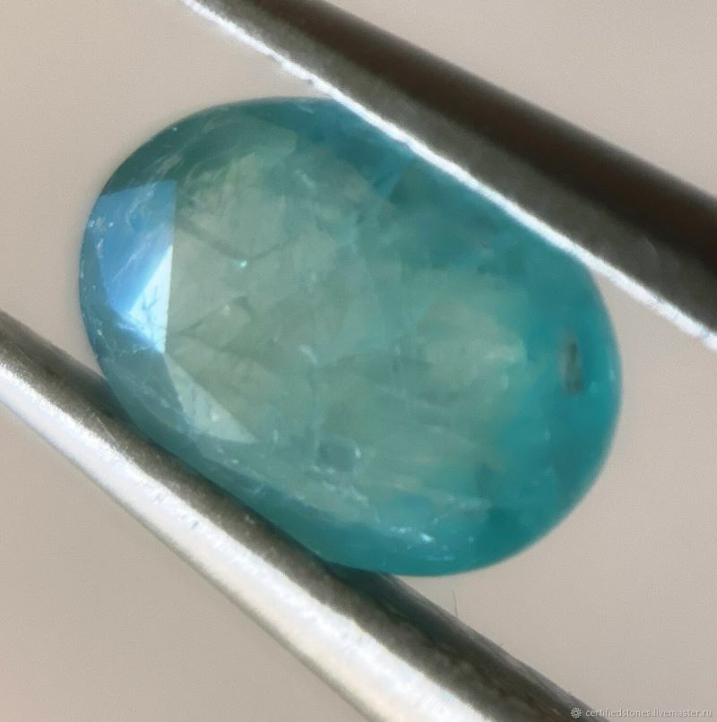
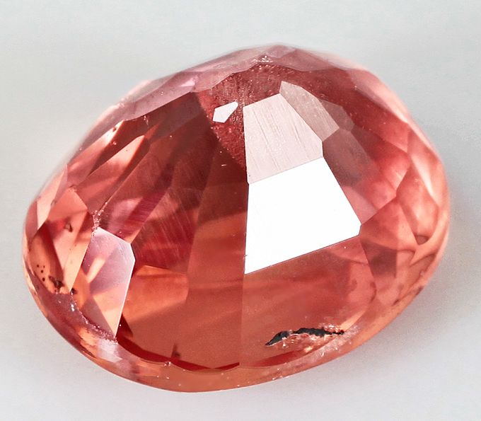
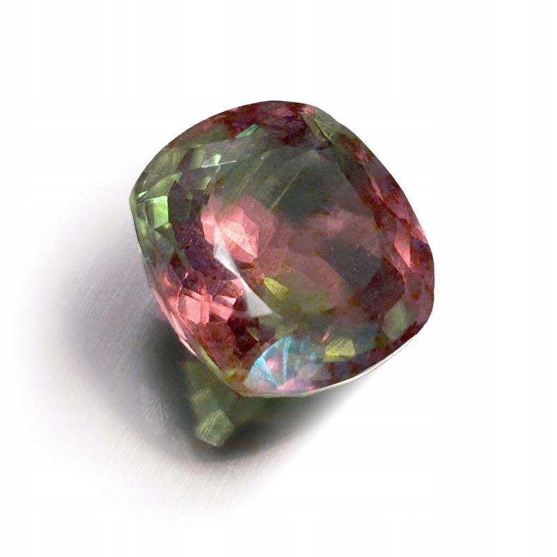
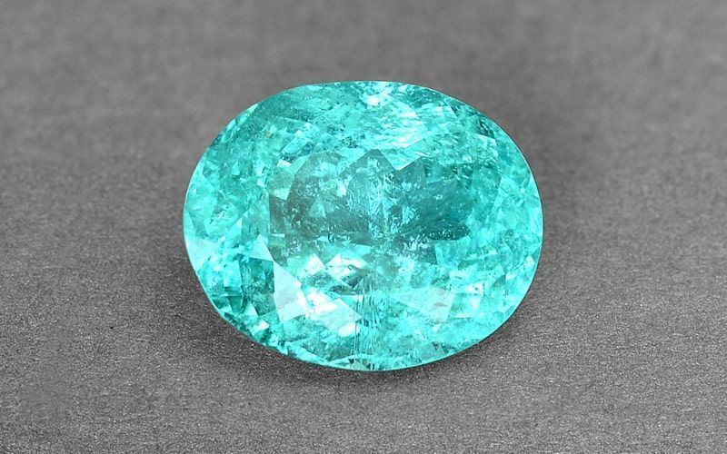
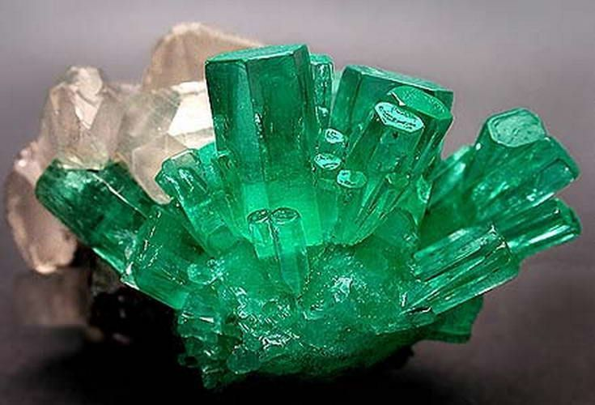
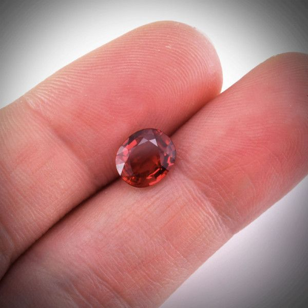
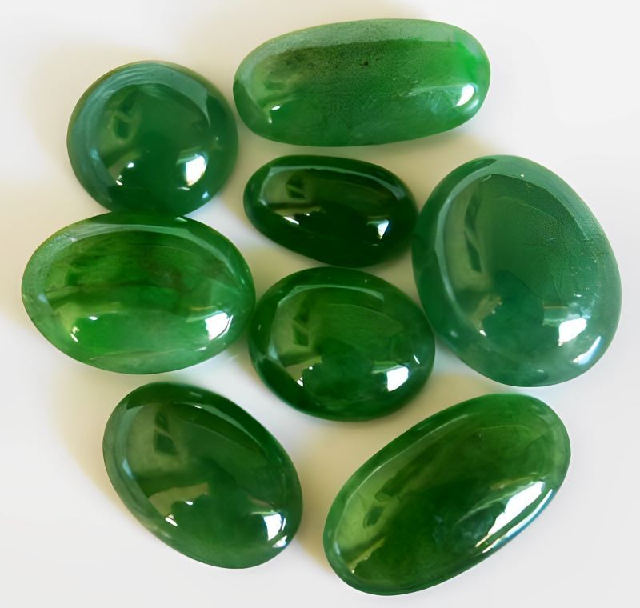
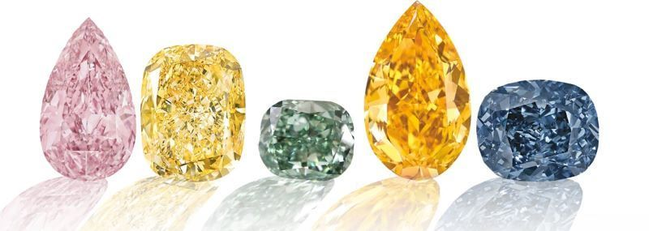
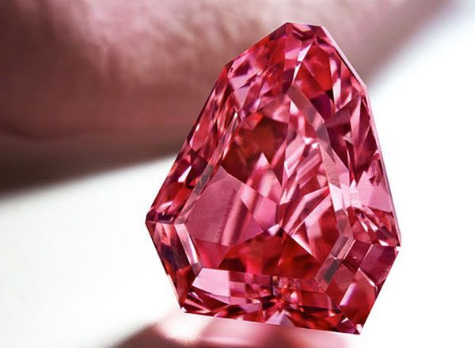

Самый дорогой камень в мире и другие ценные минералы
Какой камень дороже бриллианта, сколько на самом деле стоит самый дорогой драгоценный минерал в мире и какие самоцветы входят в элитный топ — цены, редкость и секреты ювелиров…

Одни драгоценные камни можно купить в ювелирном магазине, другие годами ждут своего часа в музейных витринах, а третьи появляются на открытом рынке раз в десятилетие. Что делает самоцвет действительно дорогим? Всего четыре параметра: редкость месторождения, насыщенность цвета, чистота и качество огранки. Чем реже камень встречается в природе и чем безупречнее его внешний вид — тем выше цена за карат. Именно поэтому список самых ценных минералов мира постоянно удивляет: в нём можно найти камни, о существовании которых большинство людей даже не подозревает.
В этой статье мы собрали рейтинг десяти самых дорогих драгоценных камней планеты, разобрали, что дороже бриллианта и почему, а также ответили на главный вопрос — как называется самый дорогой камень в мире и сколько он стоит.
Рейтинг драгоценных камней по ценности
Рейтинг составлен по цене за карат — стандартной единице веса в ювелирном деле, равной 0,2 грамма. Именно этот показатель позволяет корректно сравнивать камни разного размера. Важно понимать: итоговая стоимость конкретного экземпляра зависит от его веса, происхождения, огранки и состояния рынка. Приведённые диапазоны цен отражают актуальные данные ювелирных аукционов и геммологических изданий, но могут варьироваться. Цены в рублях указаны по курсу ЦБ РФ на июнь 2026 года (79 рублей за доллар).
Место 10. Бенитоит
Бенитоит — официальный драгоценный камень штата Калифорния
Бенитоит — один из самых экзотических самоцветов в этом рейтинге. Минерал получил название от округа Сан-Бенито в Калифорнии, где было открыто его единственное ювелирное месторождение в мире. Небольшие залежи известны в Бельгии и Новой Зеландии, однако их качество значительно уступает калифорнийским образцам.
Камень имеет насыщенный синий цвет, по оттенку напоминающий сапфир, но с особым эффектом: под ультрафиолетом бенитоит светится ярко-голубым светом. Ежегодная добыча ювелирного сырья не превышает нескольких тысяч карат, а экземпляры весом более 1 карата — настоящая редкость. С 1985 года бенитоит является официальным драгоценным камнем штата Калифорния.
Стоимость: от 400 до 4 000 долларов (~31 600 — 316 000 рублей) за карат в зависимости от размера и прозрачности. Бенитоит ценится прежде всего коллекционерами и знатоками — в широкую продажу он практически не поступает, так как имеет очень низкую плотность.
Место 9. Грандидьерит

Грандидьерит имеет достаточную плотность по таблице Мооса. Она составляет 7,5 баллов, но число ограненных экземпляров в мире исчисляется единицами
Грандидьерит назван в честь французского исследователя Альфреда Грандидье, посвятившего жизнь изучению природы Мадагаскара. Там же, на острове, в 1902 году был найден первый образец минерала. Сегодня основные месторождения по-прежнему сосредоточены на Мадагаскаре, единичные находки известны на Шри-Ланке.
Отличительная особенность грандидьерита — трёхцветность: в зависимости от угла зрения камень переливается белым, нежно-голубым и зеленоватым оттенками. Число ограненных ювелирных экземпляров, подтверждённых геммологами, исчисляется единицами — буквально несколькими десятками в мире. Именно это делает грандидьерит одним из самых редких самоцветов на планете.
Стоимость: от 20 000 долларов (~1 580 000 рублей) за карат. Высокая цена определяется исключительной редкостью — для большинства коллекционеров владение ограненным грандидьеритом является делом престижа и гордости.
Место 8. Сапфир падпараджа

Падпараджа — сапфир с уникальным сочетанием розового и оранжевого
Среди сапфиров существует особая категория — падпараджа. Название происходит из сингальского языка и означает «цвет лотоса». Этот уникальный самоцвет сочетает розовый и оранжевый оттенки одновременно, создавая нежный тёплый цвет, напоминающий лепесток лотоса на закате или отблеск заходящего солнца.
Главное отличие от обычных сапфиров — строгие цветовые критерии. Только камень с истинным сочетанием розового и оранжевого получает статус падпараджи. Одноцветные розовые или оранжевые сапфиры под это определение не подпадают. Классические экземпляры добываются на Шри-Ланке, хотя находки известны и в Танзании. По оценкам геммологов, менее 1% всех добываемых в мире сапфиров соответствует требованиям к падпарадже.
Стоимость: от 30 000 до 50 000 долларов (~2 370 000 — 3 950 000 рублей) за карат.
Место 7. Александрит

Александрит: при дневном свете зелёный, при искусственном — красный. Достаточно редкий камень, поэтому в основном в ювелирном деле используют выращенные аналоги.
Александрит — камень с редчайшим свойством: он меняет цвет в зависимости от источника света. При дневном освещении минерал выглядит зелёным или сине-зелёным, а при искусственном — красным или малиновым. Это явление называется александритовым эффектом и встречается в природе крайне редко.
Камень открыт в 1830 году на Урале и назван в честь будущего российского императора Александра II. Уральские месторождения считаются эталонными, хотя сегодня александрит добывают также на Шри-Ланке, в Бразилии, Танзании и Индии. Российские экземпляры с чистым переходом зелёного в красный ценятся выше всего.
Александрит официально признан драгоценным камнем — в России он входит в перечень ювелирных камней первого порядка наряду с алмазом, рубином, изумрудом и природным жемчугом.
Стоимость: от 10 000 до 37 000 долларов (~790 000 — 2 923 000 рублей) за карат. Самый крупный ограненный александрит весит 66 карат.
Место 6. Турмалин Параиба

Турмалин Параиба — единственный самоцвет с неоновым свечением благодаря меди.
Турмалин Параиба — самый молодой камень в этом рейтинге: его открыли лишь в 1988 году. Бразильский геолог Хейтор Диас Барбоза пять лет разрабатывал заброшенные рудники в штате Параиба, не зная, что именно ищет. Когда он наконец нашёл неоново-голубые кристаллы, их красота произвела сенсацию на ювелирных выставках по всему миру.
Уникальный оттенок — от небесно-голубого до насыщенного сине-зелёного с неоновым свечением — турмалин Параиба получает, благодаря примеси меди в составе, что не характерно ни для одного другого самоцвета. Камень светится даже в тени, создавая эффект внутреннего источника света. Соотношение добытых турмалинов к бриллиантам составляет 1 к 10 000 — именно поэтому он может стоить дороже алмаза.
Бразильские месторождения практически истощены, что делает находки исключительно редкими. Ювелирный дом Tiffany & Co заключил эксклюзивный контракт на покупку всех бразильских экземпляров весом от 3 карат. Дополнительные месторождения найдены в Нигерии и Мозамбике, однако бразильские камни ценятся значительно выше.
Стоимость: лучшие бразильские экземпляры достигают 60 000 долларов (~4 740 000 рублей) за карат, цены ежегодно растут на 20–30% из-за истощения запасов. На аукционе Sotheby's в 2021 году колье Chopard с параибами общим весом более 70 карат было выставлено за несколько десятков миллионов долларов.
Место 5. Изумруд

Изумруд — один из древнейших ювелирных камней в истории человечества.
Изумруд — один из древнейших ювелирных камней в истории. Его добывали ещё в Египте эпохи фараонов, а позже — в Колумбии, которая и сегодня остаётся главным поставщиком лучшего в мире сырья. Колумбийские изумруды отличаются особым травянисто-зелёным цветом с тёплым желтоватым оттенком и ценятся значительно выше камней из Замбии или Бразилии.
Изумруд относится к драгоценным камням первого порядка. В отличие от большинства самоцветов, у него есть собственная «шкала прощения»: включения и трещины (так называемый «сад» изумруда) принято считать естественной частью его природы, а не дефектами. Именно поэтому даже изумруды с видимыми включениями могут стоить дороже, чем безупречные камни других видов.
Что дороже — изумруд или сапфир? Высококачественный колумбийский изумруд, как правило, превосходит по цене большинство сапфиров. Что дороже — изумруд или золото? Редкий ювелирный изумруд весом несколько карат стоит несопоставимо больше равного по весу золота.
Стоимость: до 8 000 долларов (~632 000 рублей) за карат для стандартных образцов. Отборные колумбийские изумруды продаются значительно дороже: Rockefeller Emerald был продан по рекордной цене 304 000 долларов (~24 016 000 рублей) за карат.
Место 4. Рубин «голубиная кровь»

Рубин «голубиная кровь» — эталонный оттенок: насыщенный алый с синеватым отливом.
Среди рубинов существует элитная категория, которой ювелиры присваивают особое название — «голубиная кровь» (pigeon blood). Это не просто красивая метафора, а геммологический термин: он обозначает рубины насыщенного алого цвета с лёгким синеватым отливом и выраженной флюоресценцией. Такой оттенок похож на свежую каплю крови голубя и считается эталонным.
Рубин и сапфир — две разновидности одного минерала, корунда. Но за карат рубина исторически платят в три раза больше, чем за сапфир: геологические условия для формирования качественных рубинов встречаются на планете значительно реже. Лучшие образцы традиционно добываются в Мьянме (Бирме), а также на Шри-Ланке и в Таиланде.
Кольцо Sunrise с рубином «голубиная кровь» весом 25 карат, созданное ювелирным домом Cartier, было продано на аукционе Sotheby's в 2015 году за 30,3 миллиона долларов (~2 393 700 000 рублей) — один из рекордов в истории продаж цветных самоцветов.
Стоимость: от 18 000 долларов (~1 422 000 рублей) за карат для рубинов категории «голубиная кровь» мьянманского происхождения.
Место 3. Жадеит

Жадеит Империал — прозрачный, насыщенного изумрудно-зелёного цвета. Традиционно очень ценится в азиатских странах.
Жадеит нередко путают с нефритом — внешне они похожи, но это совершенно разные минералы. Жадеит твёрже, плотнее и ценится значительно выше. Его высшая разновидность называется «Империал» (Imperial jade) — прозрачный камень насыщенного изумрудно-зелёного цвета без примесей и помутнений.
На протяжении тысячелетий жадеит занимал в культурах Китая, народов Майя и Юго-Восточной Азии то место, которое на Западе занимал алмаз. В Китае зелёный жадеит до сих пор считается символом чистоты, мудрости и бессмертия. Основное месторождение Империал жадеита — Мьянма, небольшие залежи есть в Гватемале и Казахстане.
Стоимость жадеита устанавливается не столько по каратному весу, сколько по совокупности эстетических характеристик: однородности цвета, прозрачности и качеству обработки.
Стоимость: высококачественный Империал жадеит оценивается в 20 000 долларов (~1 580 000 рублей) за карат и выше. Самый крупный ограненный жадеит в мире оценён в 2 миллиона долларов (~158 000 000 рублей).
Место 2. Цветные алмазы

Коллекция фантазийных цветных алмазов — голубые, розовые, жёлтые бриллианты
Когда говорят об алмазах, обычно представляют бесцветный бриллиант. Но именно цветные алмазы — голубые, розовые, жёлтые, зелёные, оранжевые — занимают второе место в рейтинге самых дорогих камней мира. Их необычный цвет возникает под воздействием особых геологических условий: примесей бора (голубые), азота (жёлтые) или радиационного облучения (зелёные). Розовые алмазы — загадка даже для учёных: точный механизм их окраски до сих пор обсуждается.
Самые ценные цветные алмазы — голубые и розовые. Голубой бриллиант Oppenheimer Blue весом 14,62 карата был продан на аукционе Christie's в Женеве в мае 2016 года за 57,5 миллиона долларов (~4 542 500 000 рублей). Розовый бриллиант «Розовая звезда» (Pink Star) массой 59,6 карата — крупнейший в мире бриллиант категории Fancy Vivid Pink — был продан на аукционе Sotheby's в Гонконге в апреле 2017 года за 71,2 миллиона долларов (~5 624 800 000 рублей). Это абсолютный рекорд для любого драгоценного камня, проданного на аукционе. Все цветные алмазы оцениваются от 1 миллиона долларов (~79 000 000 рублей) за карат.
Место 1. Красный алмаз

Moussaieff Red — крупнейший в мире красный бриллиант, 5,11 карата.
Красный алмаз — абсолютный чемпион среди самых дорогих камней в мире. Алмазов чистого красного цвета (категория Fancy Red без дополнительных оттенков) во всём мире известно менее 30 экземпляров — это подтверждено Геммологическим институтом Америки (GIA). Большинство из них весят меньше 1 карата — найти экземпляр крупнее является мировой сенсацией.
Механизм образования красного цвета в алмазах до конца не изучен: предполагается, что он связан с особым расположением атомов углерода в кристаллической решётке под воздействием экстремального давления. Главным историческим источником красных алмазов был рудник Аргайл в Австралии, закрытый в 2020 году после полного истощения. Его закрытие сделало красные бриллианты ещё более редкими и ценными.
Самый известный красный алмаз — Moussaieff Red (прежнее название — Red Shield) весом 5,11 карата. Он был найден в 1989 году бразильским шахтёром Зе Тату в штате Минас-Жерайс, после чего огранён компанией William Goldberg Diamond Corp. В 2001 году ювелирный дом Moussaieff приобрёл бриллиант примерно за 8 миллионов долларов (~632 000 000 рублей). Это крупнейший в мире красный бриллиант, официально сертифицированный GIA как Fancy Red.
Стоимость: от 1 миллиона долларов (~79 000 000 рублей) за карат и выше. Красный алмаз — самый дорогой драгоценный камень в мире по цене за карат. По мнению экспертов, сегодня Moussaieff Red на аукционе ушёл бы за многократно бо'льшую сумму.